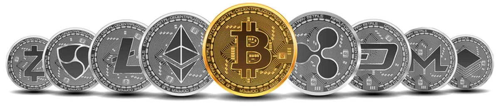

Sobre a Criptowiki
O acervo Criptowiki traz informações para o investidor sobre o mercado de ativos digitais (criptoativos) e o tokens (NFT). Fundado em 2022, a Criptowiki foi desenvolvida para você e para todos que tenham interesse neste mercado.
Nossa missão é: "Espalhar conhecimento sobre o mercado de criptoativos".
Nosso conteúdo é construído com base na informação compartilhada de forma livre por acervos fundamentados no assunto. Entregamos excelência, garantindo informação de qualidade ao investidor.
A Comunidade
A comunidade Criptowiki é 100% digital e foi desenvolvida por estudantes da PUC Minas
Inspirações
- CointMarketCap
- Cointelegraph
- CriptoFácil
- Investing
- InfoMoney
- MoneyTimes